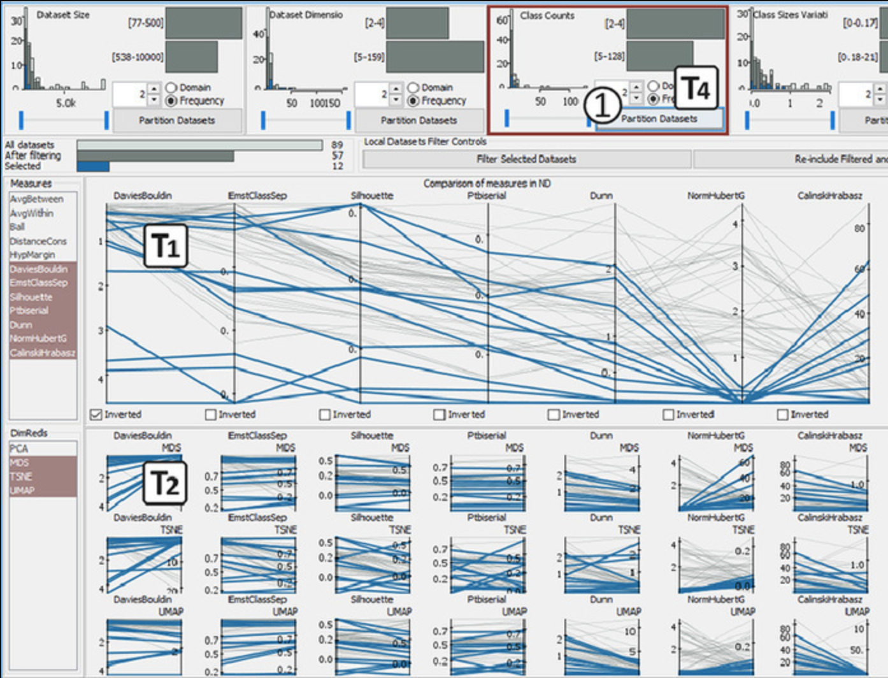

ProSeCo: Visual Analysis of Class Separation Measures and Dataset Characteristics

Venue. C&G (2021) Full Paper
Authors. Jürgen Bernard, Marco Hutter, Matthias Zeppelzauer, Michael Sedlmair, Tamara Munzner
Materials.
website
Abstract. Class separation is an important concept in machine learning and visual analytics. We address the visual analysis of class separation measures for both high-dimensional data and its corresponding projections into 2D through dimensionality reduction (DR) methods. Although a plethora of separation measures have been proposed, it is difficult to compare class separation between multiple datasets with different characteristics, multiple separation measures, and multiple DR methods. We present ProSeCo, an interactive visualization approach to support comparison between up to 20 class separation measures and up to 4 DR methods, with respect to any of 7 dataset characteristics: dataset size, dataset dimensions, class counts, class size variability, class size skewness, outlieriness, and real-world vs. synthetically generated data. ProSeCo supports (1) comparing across measures, (2) comparing high-dimensional to dimensionally-reduced 2D data across measures, (3) comparing between different DR methods across measures, (4) partitioning with respect to a dataset characteristic, (5) comparing partitions for a selected characteristic across measures, and (6) inspecting individual datasets in detail. We demonstrate the utility of ProSeCo in two usage scenarios, using datasets [1] posted at https://osf.io/epcf9/.